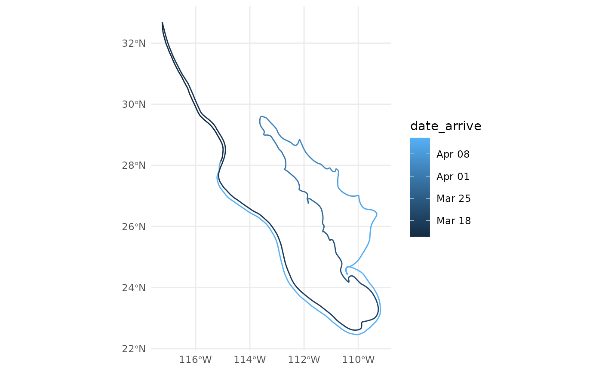

A stylized route of the Western Flyer on Ricketts and Steinbecks journey to the sea of Cortez.
route.RdA dataset with a destination and a route to that destination. Note that the route is fictionalized from the book, and modified to be aesthetically pleasing, rather than nautically accurate.
Format
sf/tibble/dataframe, with a single variable to join to the 'places' data set (if desired).
- Destination
The name of locations used in the book. Can be used to join to the "places" dataset to get dates of travel.
- geometry
a sf linestring, from the previous destination to the current one.
Examples
data(route)
places <- sf::st_drop_geometry(places)
route <- dplyr::left_join(
route,
sf::st_drop_geometry(places),
by = c('destination' = 'location_english')
)
library(ggplot2)
ggplot() +
geom_sf(data = route, aes(color = date_arrive))
